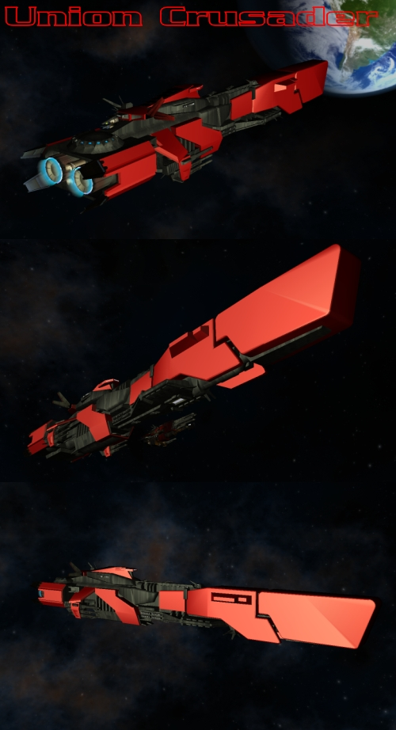

We’ve upgraded to a flash based site. The site is still under construction, but the front page is done, take a look if you get the chance.
There is an “Easter Egg” hidden in the site. (After all it is Easter.) At the top of the page just to the right of the fighter there is a link to change the theme from Colonial to Union. (Federation still to come…) Just click the text that highlights.
We’ve made a lot of progress in game development: improved mouse and joystick support, as well as improved feedback for both.
Fighter craft are really a blast to fly! A rough HUD is under construction. Even though I gave Rick a picture of exactly what I expected, he managed to make the ugliest user interface I have yet witnessed. GOOD GOING RICK! By the time this thing is ready for release everything should look much better. We are also experimenting with “force feedback” options. So, for you fighter jockeys who have a force feedback stick, we may have an excuse for you to use it.
Most of the initial work we are doing goes towards the creation of a private release demo. That demo (VIP demo) is vital to getting this project launched. If any of you know of someone who may be interested in investment opportunities, and joining the “Fringe-Online” project please contact us.
We are on track for the release of the “Team ALPHA” portion of the game. Those of you who join the ALPHA team will be able to play the fist portion of the game and have DIRECT access to the developers and myself. We will be looking for your feedback and using that to further develop the game. There will also be voting and weekly chat conferences to stay in touch with the ALPHA development team.
For now, please send in your request to join “Team ALPHA” by e-mailing me directly at justin@fringe-online.com .
New ships in development:
The next ship slated for completion is the Union Crusader. The Crusader is a cruiser class vessel similar to the Federation Ramora. The cruiser class vessels are usually larger vessels designed to be rugged, and perform well on away missions. These have a large fuel capacity and usually have a hanger for servicing and launching fighter craft.
The Crusader is a bit larger than most cruisers. It carries a total of 6 fighters, has 4 small turrets and 6 medium cannon mounts. The Crusader also has a bomb bay for dropping mines, charges or other various types of heavy weaponry. Like many Union ships it is protected by a thick hide of Union armor.
Thanks everyone for subscribing to the Newsletter. Expect a new issue in the next week or so, and don’t forget to spread the word.
Later team, Justin, Art Director

If you no longer wish to receive the Frine Newsletter please send and email with "cancel" in the title to: